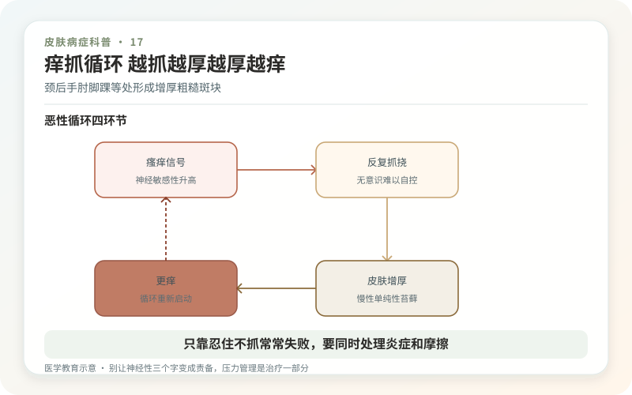
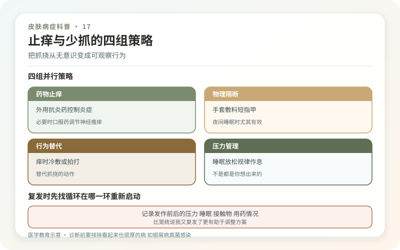

神经性皮炎的规范名称之一是慢性单纯性苔藓。它常从一处顽固瘙痒开始：抓一抓短暂舒服，之后更痒；时间久了，皮肤变厚、纹理像格子一样加深，颜色也可能变暗。常见于颈后、手腕、手肘、脚踝、小腿和外阴等容易反复触碰的位置。
名字里的“神经”不等于患者有精神疾病。压力、焦虑、无聊和睡眠不足可能放大瘙痒与无意识抓挠，但干燥、衣领摩擦、湿疹、虫咬或神经相关感觉异常也可能是起点。皮肤炎症是真的，心理和行为因素只是循环的一部分。

诊断前要排除“看起来也很厚”的病
真菌感染、银屑病、接触性皮炎、结节性痒疹、皮肤淀粉样变和某些少见肿瘤都可能呈增厚痒斑。外阴或肛周长期瘙痒还需排除硬化性苔藓、感染等。医生会看分布和边界，询问抓挠习惯和外用药史，必要时做真菌检查、斑贴试验或活检。
单块皮损持续破溃、出血、疼痛、快速变大，或全身瘙痒伴体重下降、发热等，不能只按神经性皮炎继续涂药。

为什么“只靠忍住不抓”常失败？
瘙痒本身会影响注意和睡眠，夜间抓挠常在无意识中发生。治疗通常需要先把炎症和痒压下来，医生可能选用合适强度的外用糖皮质激素、封包、局部注射或非激素抗炎药；不同部位皮肤厚度不同，强度和疗程不能照搬。
有感染迹象时需针对处理；若顽固、范围大，还可能讨论光疗或其他药物。镇静性抗组胺药有时帮助夜间睡眠，却不一定直接解决所有慢性瘙痒，服后嗜睡者不能驾车。
给手和环境设置“少抓一点”的条件
指甲剪短，睡觉可穿柔软棉质衣物或在医生指导下覆盖皮损；瘙痒来时用短暂冷敷、按压替代指甲抓。保湿剂要规律涂，减少干燥诱发。检查衣领、腰带、护具、鞋口和办公姿势是否反复摩擦同一处。
不要用热水烫、酒精擦或粗糙工具“止痒”，强烈刺激带来的痛觉只会暂时盖过痒，之后屏障更坏。风油精、精油和草药膏也可能造成接触性皮炎。
压力管理不是“都是你想出来的”
如果每逢焦虑、熬夜就明显加重，可以把放松、规律睡眠、行为替代和必要的心理支持纳入方案。这不是推卸皮肤科治疗，而是同时处理触发抓挠的通路。记录最容易抓的时间、场景和动作，常比泛泛说“少想一点”更有效。
皮肤变厚和色沉需要时间恢复，痒先减轻并不代表可以马上停下所有维护。按计划逐步减少药物，继续保湿和防摩擦，能降低复发。
把目标拆成三层：夜里能睡、白天少抓、斑块逐渐变软变平。先赢回对抓挠的控制，再谈颜色是否完全恢复。
把抓挠从“无意识”变成可观察行为
神经性皮炎的核心循环常是痒—抓—更厚—更痒。可以记录一周：最容易抓的时间、地点和情绪是什么，是否发生在开会、追剧、入睡前或焦虑时。把指甲剪短、夜间戴柔软棉手套、在常坐位置放冷敷袋或保湿剂，都是降低自动抓挠的环境设计。目标不是靠意志“永远不碰”，而是在手伸过去之前增加一个替代动作。
止痒必须同时处理炎症和摩擦
仅靠口服抗过敏药未必能打断局部慢性炎症。医生会根据厚度和部位选择外用抗炎药、封包、局部注射或其他方案；颈部、阴囊、外阴等薄嫩部位用药更需谨慎。紧领、饰物、粗糙衣料、汗液和反复热水烫洗都可能维持刺激。烫洗带来的短暂麻木，常以之后更干、更痒为代价，并不是治疗。
别让“神经性”三个字变成责备
压力可以放大瘙痒和抓挠，但这不等于患者矫情，也不等于皮疹全是心理问题。若焦虑、失眠或强迫性抠抓明显，皮肤治疗与睡眠、压力管理可以并行。长期单侧、形态异常、治疗无效或伴破溃出血的斑块，应复诊排除真菌感染、银屑病、接触性皮炎等。真正有效的管理，是减少复发循环，而不是要求患者证明自己“忍得住”。
复发时先找循环在哪一环重新启动
是停药太快、保湿减少、衣领摩擦，还是失眠后夜间抓挠增多？按顺序核对，比笼统归咎于“免疫力差”更可操作。旧斑留下的色沉和增厚会慢慢改善，别为了加速退色再次刷酸或搓洗，否则可能重新点燃瘙痒。